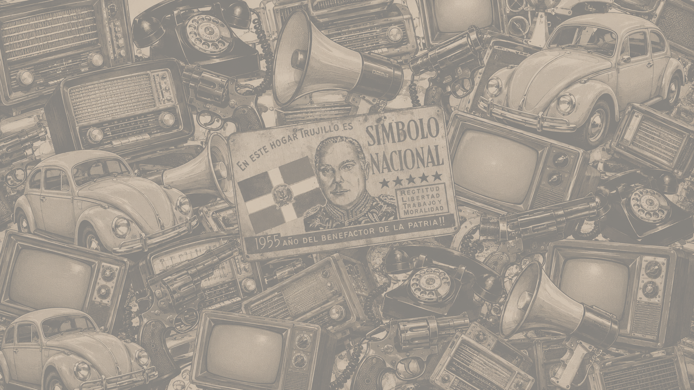
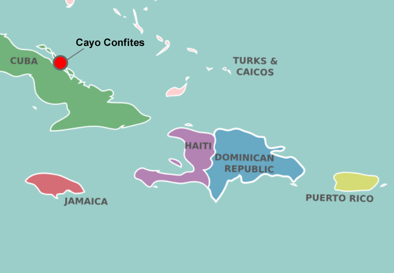
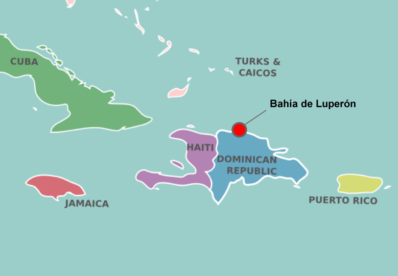
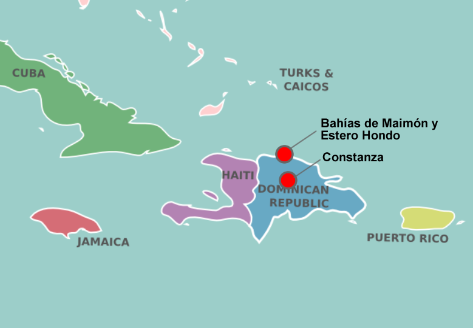
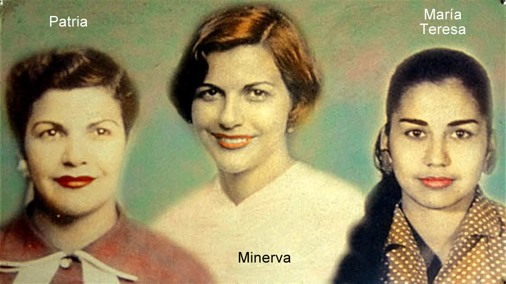

Falta imagenins/001portadaL.png (laptop) o ins/001portadaCv.png
Historia de la República Dominicana

Al inicio de la tiranía y dictadura, surgieron movimientos rebeldes que fueron destruidos. Fueron los casos de Virgilio Martínez Reyna (1930), Cipriano Bencosme (1930) y Desiderio Arias (1931).
La oposición estuvo neutralizada por más de 15 años.

La radioemisora "La Voz Dominicana", propiedad de Petán el hermano de Trujillo, transmitió un mensaje denunciando la preparación de invasión que se realizaba en Cuba.Trujillo inició una ofensiva diplomática para intimidar y neutralizar a los expedicionarios.
El presidente cubano Ramón Grau San Martín no simpatizaba con el tirano dominicano y apoyó a los rebeldes.
La expedición se preparaba en Cayo Confites, un islote en el archipiélago situado al norte de Cuba. El ejército opositor ya contaba con 1000 hombres de diferentes nacionalidades.
La expedición fue abortada por presiones de EUA. Los cómplices locales en el país fueron detenidos y las armas confiscadas por el gobierno de Cuba por presiones de la OEA.
PREPARACIÓN - Después del fracaso del complot de Cayo Confites, los exiliados dominicanos reintentaron invadir la República Dominicana y derrocar a Trujillo.
Los líderes se trasladaron a Guatemala, después de ser expulsados de Cuba. Los nuevos planes para invadir la República Dominicana se iniciaron en enero de 1949. El número de combatientes de la invasión era menos de 100 hombres. Los dominicanos eran 16 hombres, 5 cubanos y 6 españoles; el resto de otras nacionalidades. El presidente guatemalteco Juan José Arévalo apoyó a los expedicionarios.

LLEGADA - El 19.Jun.1949, en un hidroavión tipo PBY Catalina, el comandante Horacio J. Ornes Coiscou acuatizó con 12 hombres en la bahía de Luperón en Puerto Plata.Los pobladores de la comunidad de Luperón creyeron que los expedicionarios pertenecían al Ejército Nacional Dominicano.
Cuándo los rebeldes desarmaron a las autoridades de la localidad, se produjo una estampida de los locales.
Los rebeldes esperaban otro grupo con más de 40 hombres, que no llegó nunca.
CONTRAATAQUE DE FUERZAS TRUJILLISTAS - El gobierno fue posiblemente alertado vía telégrafo.
La llegada de las fuerzas del gobierno se inició con un apagón eléctrico en la localidad, seguido de una balacera y explosiones. Ante el ataque sorpresa, murieron varios expedicionarios y el grupo intentó abortar la operación para reorganizarse.
RETIRADA DE REBELDES - Al intentar despegar nuevamente en el hidroavión, este encalló en un banco de arena. A seguidas una patrulla guardacostas disparó y el avión rebelde explotó.
Solo sobrevivieron 5 de los expedicionarios que fueron finalmente arrestados. Dias después se desató un escándalo internacional, Trujillo acusó a los presidentes de Cuba y Guatemala.
La presión internacional se enfocó en los sobrevivientes que luego fueron acusados y condenados a 30 años de cárcel.
CONCLUSIÓN - Finalmente, una investigación de la OEA acusó al presidente cubano Grau San Martín y al presidente guatemalteco, Juan José Arévalo por conspiración. También acusó a Trujillo por conspirar contra el gobierno haitiano del presidente Dumarseis Estimé.
El 30.May.1949, los sobrevivientes fueron deportados a Venezuela.
PREPARACIÓN - Apoyados por los gobiernos cubano y venezolano, un grupo de rebeldes opositores a Trujillo, comandados por Enrique Jiménez Moya, inició sus preparativos en Cuba.
El presidente venezolano Rómulo Betancourt, había sido víctima de un atentado en La Habana en 1955. Se sospechaba de Trujillo debido a que Betancourt denunció la dictadura trujillista ante la Organización de Estados Americanos (OEA).
El grupo guerrillero estaba compuesto por un estadounidense, cubanos, dominicanos, venezolanos, puertorriqueños, un español y dos griegos.

LLEGADA DE REBELDES A CONSTANZA - El domingo 14.Jun.1959 un comando de guerrilleros antitrujillistas con 56 soldados de varias nacionalidades aterrizó en un avión del tipo C-46 en el aeropuerto de Constanza. El avión despegó inmediatamente y regresó a Cuba. Los custodios del aeropuerto se enfrentaron a balazos con los expedicionarios.LLEGADA DE REBELDES A MAIMÓN Y ESTERO HONDO - El día 19.Jun.1959, 126 hombres desembarcaron en la bahía de Maimón en Puerto Plata. Ese mismo día desembarcaron 48 expedicionarios en otra bahía pequeña llamada Estero Hondo, tambien en Puerto Plata. Muchos guerrilleros murieron por el ataque de unidades navales de guardacostas y aviones cazas trujillistas.
COMBATES - El piloto Juan de Dios Ventura Simó, quien había desertado en abril, regresó como combatiente. Fue capturado el 17 de junio.
El comandante Enrique Jiménez Moya, murió combatiendo a fines de ese mes.
DERROTA - El 4.Jul.1959 ya los expedicionarios habían sido derrotados. Los sobrevivientes fueron arrestados, torturados y fusilados sin juicio alguno por el SIM y Ramfis.
Los cuerpos fueron enterrados en fosas comunes clandestinas y fueron descubiertos en julio de 1987.
Finalmente y para mostrar su perdón, el tirano Trujillo indultó a seis (6) sobrevivientes.
Los restos expedicionarios de junio reposan en monumento levantado a su memoria por la Fundación de los Héroes de Constanza, Maimón y Estero Hondo.
Un exmiembro del aparato represivo de la dictadura proporcionó información sobre el lugar donde habían sido enterrados los expedicionarios ejecutados en la Base Aérea de San Isidro. A partir de esas revelaciones se iniciaron las excavaciones dirigidas por el antropólogo físico Fernando Luna Calderón. La prensa dominicana cubrió el proceso por varias semanas. Se recuperaron 67 osamentas distribuidas en 12 fosas comunes.
ORGANIZACIÓN - La invasión fracasó militarmente pero dejó huellas que dieron origen a otra organización política. El "14 de Junio (1j4)" fue un movimiento político de la República Dominicana que luchaba en contra de la dictadura de Rafael Leónidas Trujillo. Sus líderes fueron los abogados y activistas dominicanos Manolo Tavárez Justo y su esposa Minerva Mirabal.
El grupo político se llamó así, en homenaje a los héroes que participaron en la Invasión de Constanza, Maimón y Estero Hondo en 1959, del cual adoptaron su plan político.
En enero de 1960 la agrupación llegó a cubrir casi todo el territorio dominicano con unos 300 militantes.
EL SIM DESCUBRIÓ EL 1J4 - Un integrante de la agrupación, equivocadamente, invitó a un espía trujillista a una de las reuniones.
EL SIM DE CACERÍA - Al enterarse, el SIM desató una cacería en contra de los complotados. Minerva, sus hermanas así como sus esposos fueron apresados y torturados.
La cárcel de la 40 y la cárcel del 9 (km 9 de la Carretera Mella) fueron convertidas en centros de tortura y asesinatos por Jhonny Abbes. Minerva Mirabal y Manuel Aurelio también cayeron presos y fueron torturados.
El 27.Ene.1940, un grupo de 27 jóvenes opositores fueron ahorcados y electrocutados en "La Cárcel de la 40" luego de hacerles firmar sus órdenes de libertad.
IGLESIA DOMINICANA PIDIÓ CLEMENCIA - Ante el escándalo nacional, tres días después los obispos de la Iglesia Católica Dominicana publicaron una Carta Pastoral solicitando la liberación de los presos políticos.
Una 2da. Carta Pastoral fue publicada por el obispado dominicano solicitando la liberación de los presos políticos.
Los obispos firmantes como Panal y Reilly fueron agredidos por trujillistas.
IMPACTO SOCIAL EN REP. DOMINICANA - La sociedad dominicana que era creyente y muy católica, se encontraba pasmada ante tanta barbarie. Algunos presos, especialmente las mujeres, fueron liberadas pero los líderes varones siguieron encarcelados

ASESINATO DE LAS HERMANAS MIRABAL - Los esposos de las hermanas Mirabal, habían sido trasladados a la cárcel de Puerto Plata.El 25.Nov.1960, Minerva, Patria, María Teresa y su acompañante Rufino de la Cruz; regresaban a su hogar luego de una visita a la cárcel. Fueron atrapados en una emboscada por agentes del Servicio de Inteligencia Militar (SIM), asesinados a garrotazos y arrojados por un barranco.
Este crimen de estado reveló la crueldad del régimen ante la sociedad dominicana.